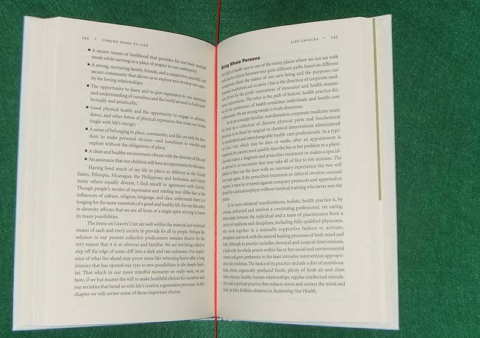

Decapod Help - Dewarp
What is Dewarp?
Dewarp is the process of taking a set of stereo images and its camera calibration data to produce a flattened version of the content.
Example Input Stereo 3D Pair:

Example Dewarp Output:


How to Dewarp Stero 3D Captures
- Locate the ZIP file containing the stereo images that are to be dewarped. If the stereo images were captured using Decapod’s Capture tool, the images will be in a ZIP file called “capture.zip”.
Note:
Stereo images should follow a required filenaming pattern. Refer to "Naming Stereo Images" below. - Locate calibration data.
- Locate images.
- Select "Dewarp" to begin the dewarp process.
- When prompted, save the dewarped file to a safe location.
Naming Stereo Images
Decapod’s Dewarping tool expects the stereo images to be named in the following manner: capture-[capture #]-[camera #].jpg
For example:
-
capture-01-1.jpg, capture-01-2.jpg, capture-02-1.jpg, capture-02-2.jpg ... -
capture-01-0.png, capture-01-1.png,capture-02-0.png, capture-02-1.png ...
For each [capture #] there will be two images - one from Camera 1 (i.e. left) and one from Camera 2 (i.e. right). If the images do not follow this format, then the Dewarp tool may not be able to process the images and may give undesired output.
If images were captured using Decapod’s Capture tool, by default the images should already be named to follow this format.